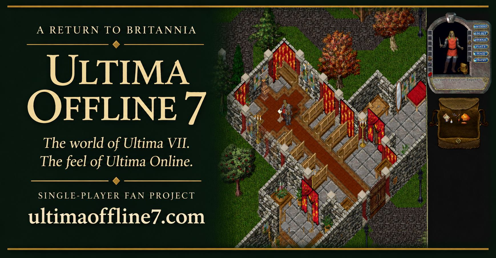
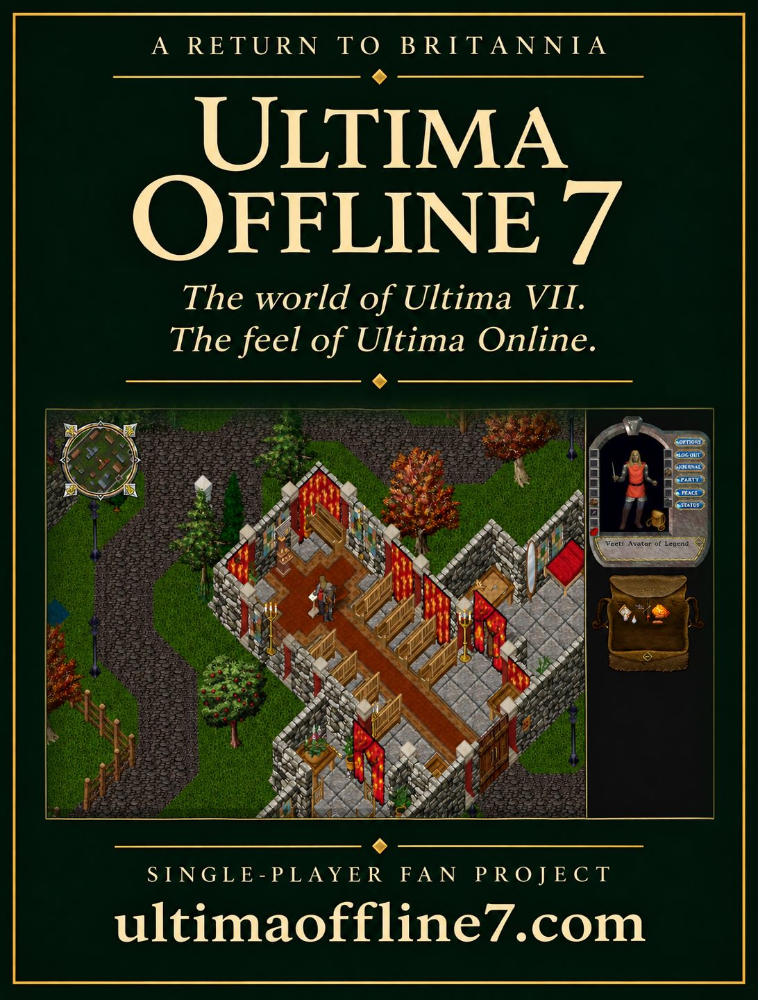

A RETURN TO BRITANNIA
Bring an old friend
back to Britannia.
The world of Ultima VII. The feel of Ultima Online. Share the project with someone who remembers.
Use this link for the homepage preview in messages and social posts.
The link preview
Download landscape image ↓

Telegram, WhatsApp and X/Twitter choose their own card layouts. Previously shared links can keep an older cached image.

FOR YOUR FEED OR STORY
A little more
room for nostalgia.
A portrait version for sharing directly on Instagram or as an image in your favourite chat. Fit the complete artwork in your chosen post format.
Download portrait image ↓
Suggested caption: “The world of Ultima VII. The feel of Ultima Online. Britannia calls again. ultimaoffline7.com”